Archives : 2009-08
两个我 @ Aug 31, 2009
凌晨，梦里的故事让我止不住的笑起来，太好笑了，控制不住，笑得四脚朝天。此时，两个我出现了，一个在梦中爆笑不止，另一个清醒的看着爆笑的自己。即一个旁观的我看着这个行为中的我，不知道哪个是真实的自己？
生活中想必也有很多这样的时候，旁观的自己看着行为中的自己。
开心...不开心？ @ Aug 31, 2009
中午炒了两个好菜，很开心；
上周买了一双美鞋，很开心；
周末拥有一只镜头，很开心；
带Luke去社交，不开心。
它在人家家里画了两次地图、投了一次炸弹，大有占地为王之势！还和12岁的老爷爷打架。社交的它，完全变成另外一只狗，让我崩溃，面红耳赤、无地自容。想起它满脑子都是疯狂的炸弹气味儿~
试**镜
这只黑糊糊一片的12岁老爷爷，如果不笑的话，判断不出五官具体的位置，呵呵~

笑得好开心，完全找不到眼睛啦；

桌上的一点蛋糕渣让外外驻足凝神好久，即使春情荡漾的的可卡小姐站边上也没有美食这样令它倾心；
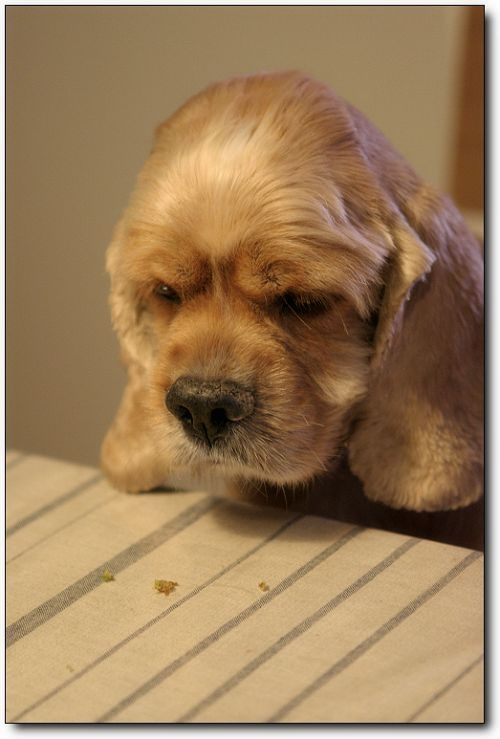
外外伸长脖子努力想与问问烤制的抹茶蛋糕靠近一点，再靠近一点，吃是外外毕生的追求与信仰，老爷爷和小伙子在桌子下面打架也影响不了它；

问问做的“抹茶乡村蛋糕”与口味类似“丝袜奶茶”的阿萨姆奶茶，贤惠啊~

这家稀奇陌生的东西真多。


12岁的米罗象一条温暖的皮草围巾；

人很忙，狗狗也很忙。

豆瓣.九点.趣味 @ Aug 31, 2009

整个周末到现在，中国茶反向连接被豆瓣的网址铺满整个界面，日日夜夜，占到访问量的95%，好奇地点过去查看，是douban 九点 趣味，推荐茶上一篇《有关摄影的思考》的blog。对豆瓣拥有庞大的用户量早有耳闻，在精力有限之下仅能用心照顾好一个中国茶，所以暂时没在豆瓣注册。感谢豆瓣编辑厚爱及订阅中国茶的豆瓣用户，有些用户俨然是熟悉的老茶客了，anyway,have fun~

新镜头 @ Aug 29, 2009
下雨的下午还是去了艺风，买了canon EF 24-70mm f/2.8L USM的镜头，装在350D上之后感觉有点畸形，好象个头小的波霸MM，走路往前栽似的。不过现在买也是为了以后换机身做准备。晚饭时迫不及待地做起了比对，以下照片没有经过PS，完全是原片效果。
以下是用腾龙28-75mm F2.8恒定光圈的镜头拍摄：

Canon EF 24-70mm f/2.8L USM镜头拍摄：

用canon EF 24-70mm f/2.8L USM镜头试了几张夜晚拍摄的效果。
1、在车内拍摄的中控台上的小摆设；
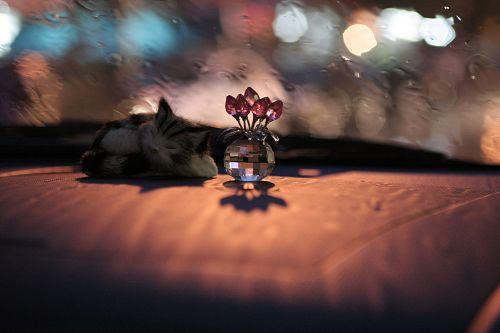
2、隧道里的汽车；
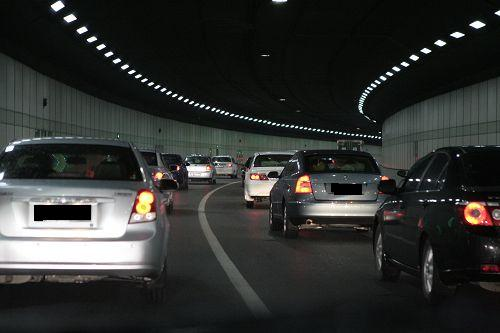
3、TENBA摄影包，回家查了下官方指导价是680，商家报1380，我还了80元，1300买入。明天就去找他买闪光灯，然后和他谈谈摄影包的价格。这个教训说明买东西只做大件功课，查资料查价格查评测，而忽略了小件。只有错买没有错卖的。那小子说TNBA是摄影包中的LV，如果LV卖1万，大家都花1万买我也没意见，如果大家花1万买我花2万，那肯定有意见。话说回来，我宁愿花1万去买电子产品和摄影器材也不会花1万去买个LV回来。恩~但愿明天那小子装个傻说记错价格了。。。；

4、摄影包的侧袋
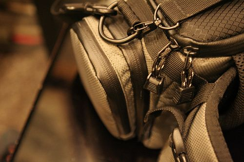
是不是有区别呢？应该还是有的吧？？？尤其是中控台上小摆设那张，以前我用SONY F717、Canon 350D+50mm f1.8以及Canon 350D+腾龙28-75mm F2.8都拍摄过，这只24-70的镜头夜间表现好一些，更多优势有待考察。第一次用24-70，很重，手腕不吃力。这只镜头08年卖8750元，今年8月行货价格是1万，也有报10500、10200不开票价。虽然镜头买了1万，但摄影包的620补在镜头上了，买完大件买主的注意力会放松，店家其实是在小件上赚钱的。
我很想弄清楚这只镜头经典在哪儿？以及为什么大家都认为有收藏价值？等我找到这只镜头的精彩之处，我会比买到它更快乐。
有关摄影的思考 @ Aug 28, 2009
每每旅行前对摄影最用心，比如06年去塞班立刻从傻瓜机换成单反，说明书在飞机上看的，而说明书永久被遗漏在飞机上。当时在塞班的酒店里就开始PS，原件被完全P掉了。每一时期的审美、PS想法、使用机器的技术以及思想、心态一定是会不断变化的，过了一年渐渐知道应该留下所有的原件照片以备后用。
我当然不想只成为一个熟练的相机操作工，而是希望通过摄影表达内心与观点，以及记录生活细节，拍摄令我感到愉悦。不过拍的大多是到此一游照，如果2002年的照片按现在审美编辑？如果2009年的照片按2020年的审美编辑？我，象大多数人一样对过去的稚嫩持有不屑与逃避，甚至想用一只油漆刷将过去全部刷成白色或黑色，只要过去不再出现。当然这种想法也是幼稚的，那么我还需要将6、7年间所有的照片按照2009年的我的想法重新编辑归档吗？
这两天陆续翻看“问 问”的相册，不知道该说什么好，她的摄影就象她的文字，绝不多余，也不热情似火，总是淡淡地点到为止，而看的人情绪却不断累积不断延伸。偶尔我也能创作出类似的作品，当然这是我所欣赏的，但就象我这个人一样时常欢快时常沉重，摄影也经常处于不稳定状态。最重要的是在研究如何使用好手中相机的同时，我们是否需要为自己规划统一的摄影风格，哪怕仅仅持续一段时间？
以下是从问问的相册转载的...我喜欢的照片。
它们打动我，开启了我内心本身存在的某些东西，然而这之前自己却不曾发觉过：

在所有摄影里我最爱看人像摄影，大概与我喜欢研究人的心理有关，看摄影里的人与看大街上的人，形形色色的表情，那些表情下面掩盖着内心，可以想象出许多丰富的故事。最最受不了所谓风景大片，除了风景感受不到任何东西，就象一个华丽的LV，空洞与空虚。
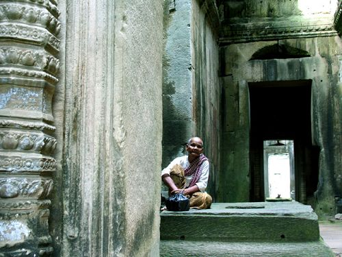
被问问这张照片吸引的原因是她脚下的木栈板，及其身后翻卷着的云彩，灰色的画面色调。那个栈板据说是世界上著名建筑之一，在横滨，栈板下面是个码头。我个人感觉她一两年内的照片整体色彩比较浓郁压抑，今年BLOG上的照片却清淡许多，这是一个明显的变化。

看到问问这张第一感觉是惊艳......巴西日裔、Lisa Ono，Bossa Nova，微醺的red wine，咖啡馆里的香醇气息，窃窃私语地巴黎小酒馆，下午茶等等。她的表情、花色裤子与盘腿的坐姿，叛逆的柔柔地透着矜持与精致。这些丰富的场景，表情里的各种人物通过这张照片塞满了我的想象。超爱这张~

选择.难 @ Aug 27, 2009
人最好只有一种选择，选择多了无从下手。
比如现在我是给原先的350D配个EF 24-70mm f/2.8L USM的canon镜头呢，还是直接上5D II+EF 24-70mm f/2.8L USM？或者先上5D II借个EF 24-70mm f/2.8L USM的头旅行的时候用？如果是第一种方案，会不会有小马拉大车的感觉？直接上5D II是不是有必要？据说这只镜头是佳能变焦镜头的中坚，自2002年发布以来，在135镜头领域没有任何一枚其它镜头能与之匹敌，所具备的性能满足了最严苛摄影者的一切要求。

另一款镜头的选择是EF 24-105mm f/4L IS USM。24到105mm涵盖了从广角到中焦最长用的焦段，摄影者在很多情况下仅携带这一枚镜头就能完成全部的拍摄工作。它最受欢迎的重要因素在于IS影像稳定器。但我很想知道这个头是否能象24-70mm那样更好的表达人像效果？

看了几天的网上评测，不想陷入器材党的行列，我只希望在原有画质的基础上能有明显的提高。研究一圈下来，感到又困又乏，仍然不能确定。如果拿不到签证，我就啥也不想直接上5D II和EF 24-70mm f/2.8L USM，爱惜自己的情绪，爱惜自己的情绪啊！
这一天 @ Aug 26, 2009
到上海的晚上Angie还在业务应酬，不得已打车过去，作为她的好朋友，作为她家族的公司，俺们俩有义务卖力的唱歌卖力的喝酒卖力到午夜过后，洗完澡睡下呢喃几句。。。醒来便已是早晨。
听见Toby一会儿走到水盆处喝点水，一会儿走到食盆处吃几粒狗粮，一会儿在阳台上啃会儿骨头，总之听见它来来回回的走，就干这三件事。它的小爪子敲击在地板上哒哒哒哒的声音从未停止过，为什么不一次性把每件事都干完呢？你这只威尔士柯基犬小坏蛋！Luke等我起床的方式是假寐，一旦我的脚落进拖鞋，它便迅速起身。Toby见着我在我脸上亲热地一阵狂舔，只要别半夜厚脸皮跳上我们的床就好。
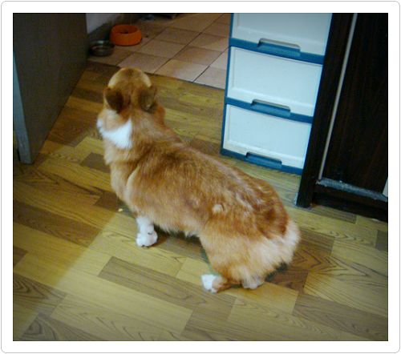
这是08年年初大雪纷飞的夜晚给Toby拍的微笑照。那次他最闹腾，大半个晚上从我这头跑去Angie那头，反反复复进行夜间马拉松运动。反反复复跳上床要和我们睡一起，那时它还有啃拖鞋的习惯，我们睡觉前会将拖鞋搁床头柜上以防不测。它被主人拎到笼子上受惩罚时还面带笑容，不能跟它急了，这个小二皮脸。
这样的街景在早晨的时候最迷人，街边的小商店杂货铺，阳光在树叶里投下细碎的影子，很有生活着的感觉。但是我只喜欢春秋季节里这样的早晨，夏天还是。。。算了吧，等了好久才等到一辆空的出租车，匆匆赶到领馆迟到20多分钟。
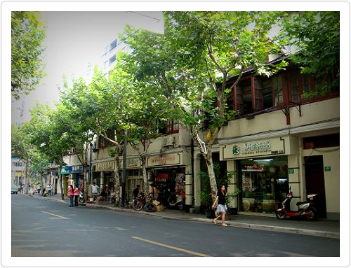

从领馆回到Angie公司还没到中午，虽然送签时遇到个青皮妹妹拉着三尺多长的脸，极度缺乏爱抚内分泌失调状。这种会双语的领馆中方工作人员收收材料收收费，在资源如此浪费的前提下，能指望她对计划哈皮的人表达出怎样的好脸色呢？我这厢理解哒~

坐在她舅舅的大班椅上我只是凭一小段一小段的故事感受这位先生辉煌与没落的过往，事实上这次才有了贯穿起来的认知。这位先生86年个人已创下百万资产，九十年代初在香港、马来西亚等地开设多间分公司，98年企业在加拿大上市。。。他当年提携的几人如今都是几千万身价。而我目前所在的集团在当年他的企业面前就是个小弟弟级别。更传奇的是98年之后的10年劫难。。。如今再次从头开始。。。离开后我还是禁不住落泪。。。难怪那位在英国著名律师事务所的大律师也想多一些与先生交流的机会，我也希望能比今天多一些沟通的时间，回头看看周围多的是自鸣得意的井底之蛙，真需要多些机会认识世界之大之黑暗。反正这位当年的风云人物未来15年一定会出传记，等着看吧。据说这位先生以前的办公室象总统套间一样富丽堂皇豪华极致。

上海最让我受不了的是人象蝗虫一样成群成群的，候车室根本没有地方坐，能找个人少的角落也不容易。

短途动车真比长途动车体面许多，没有逃荒的感觉，安静，空气里难得有方便面味儿，卫生间配有卷纸也干净很多。瞧瞧行李架就知道这真的是短途动车哦。某天新闻里写南京到上海的火车将再次提速，约一小时左右便可到达彼地。

回南京的路上我一直在睡觉，过了镇江才醒，镜子里的睫毛液已经糊到下眼睑上，收拾收拾蓬头垢面的妆容，期待快点回到那个舒适的家。
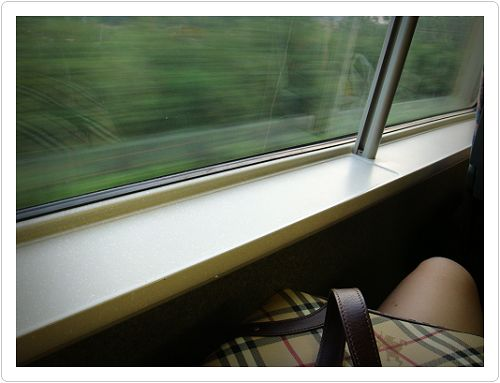
选择火车出行的另一个体验是乘地铁，仿佛从封闭环境融入朝气腾腾的大生活。记得南京地铁刚通行那会儿，为了体验这座城市的新事物特地买了票从A站乘到B站，还留了影，至今仍然保留着那枚宝蓝色圆形塑料的地铁票，呵呵，对的，我偷带出来一枚。

这列火车很“和谐”。 @ Aug 25, 2009
急急忙忙。急急忙忙。
第四次乘上地铁，嗖嗖嗖，还是赶上了火车。
这辆从北京南站驶向上海的动车，全然没有短途车厢的爽净感，我那靠窗的座位被一口京腔的女孩儿占领，她指指挪移困难的手提箱，我便妥协了。再一看，行李架、脚底下塞满大小不一漂亮的不漂亮的行李。耳朵的左后方，右后方，右边以及右前方，孩童吵闹哭泣大声讲故事嬉戏蹦蹦跳跳的声音如波浪般此起彼伏。北方爷们儿投入的聊着天，小声斗着嘴。在前座椅背后翘脚抖腿的人脸上荡漾着满足。太逗了，大伙儿彼此很不见外，和谐社会里的快乐小火车。
我准备在如此和谐的环境里翻一翻卡夫卡与布拉格。（2009-8-25 写于D31列车上）
星期一忙乱 @ Aug 24, 2009
上午忙完交货的事情，下午忙签证材料。申请表是给小人国用的，需要填写的留白非常小非常小，手写下来面积总是不够，为保持页面美观改用打字机，小的缩小间距，稍微大点儿的放宽间距。接着复印材料，向总经理请假，下班前预定了明晚及后天的火车票，这才算完成80%。剩下机票、酒店的预订单还要去别人那儿拿。烦是烦了点，不过准备的过程蛮有意思的，星期三送签。对，提前啦，所以今天有点抓狂。忙完这一切，打了个电话给女友，听到电话那边欢快的声音，哪里象是去参加葬礼的啊？！
上周末就做了一顿饭，炸薯条和煎素菜饼，外加一个娃娃菜粉丝汤。素菜饼还剩三个，说明口味一般化。买回来是冻的，可以微波炉加热，也可以用油煎了吃，很方便。

时光消磨 @ Aug 23, 2009
在5小时后的早晨7点多醒来，想必前一天夜里疯掉的缘故，困，但怎么也无法入睡。努力不去想尴尬与低落，今天和家人一起吃饭，想着现在几点，几点订位子，几点到达，想着想着就到了必须起来的时间。
每每买东西总要我帮忙看一眼的姐姐，即使大家双腿走得快残废了，她还是不会买下任何一件。看到那些曾经喜欢过的品牌换了风格，换了商场经营的位置，在角落里苟延残喘的首饰。。。惊叹：能在这家商场里持续露脸，不容易啊。越逛越觉得无聊，一件衣服动辄上千要么几千，凭什么啊？通货膨胀啊？卖个4、500差不多了，搞不懂的价格。其实女人只要不是脱水蔬菜，气质稍微好一些，穿麻袋也不会逊色到哪里去，不如省省钱出去旅游！在整个下午毫无效率的逛街后，转战水游城遇到街舞PK的表演活动，还比较有趣。
最早的金鹰大酒楼是个很小的店，10年间发展了几家分店，塌塌实实的做精品菜，价格也实实在在地涨。这10年里有没有不涨价的东西？
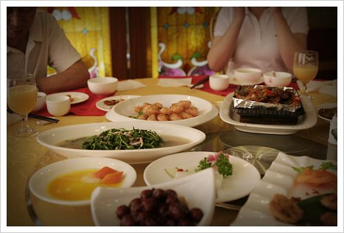
好象从南京某个地方忽然冒出来的一群年轻人，青春洋溢，充满激情。我也被感染了，站着看了好久才离开。对跳时他们是望着对方眼睛的，做各种表情。归归，这么近的表演还真需要一定的心理素质哦，不然会怯场啊`


街舞之后是小丑的魔术表演，听到孩子们认真地开心地与小丑叔叔互动，不知怎么我的汗毛竖起来了。。。


“我要买一件正式的短袖。。。我要买一条连衣裙。。。我要买双鞋。。。我要买。。。”
试完这条裙子后姐姐还是什么都没买。

最喜欢营业员和姐姐讨论，我就可以随心所欲的喀嚓喀嚓几下。
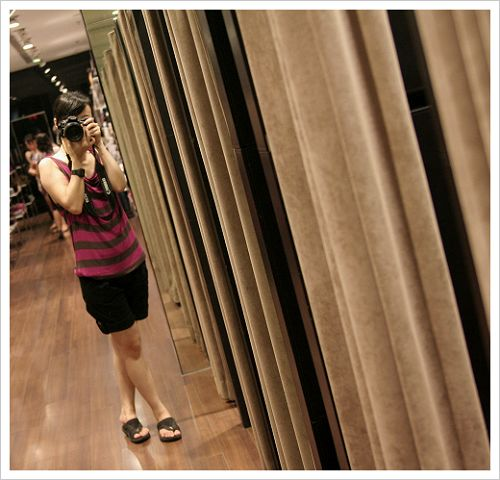
我说你背对镜子露半个肩膀。。。拍的时候外甥女立刻捂起脸。
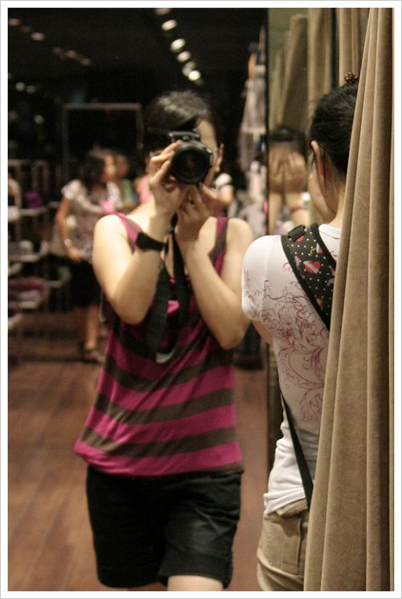
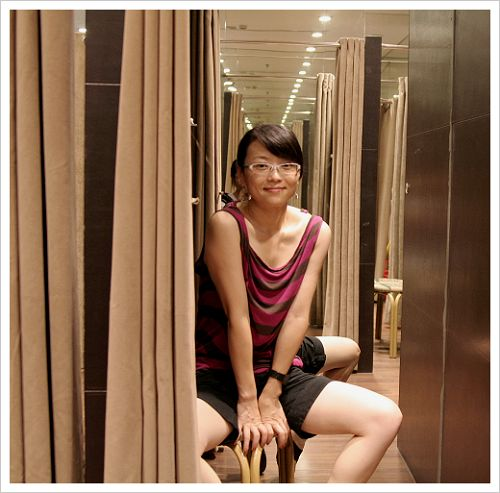
这个学走路的小朋友从扶梯上缓缓露出脑袋、身体和脚后，我们笑了。
当他们走到前面时，我们呆了！
瞧瞧他的小PP被勒成....疼不疼啊？
感觉小朋友不是靠自己走路，而是被大人提着走的。

热情的读者 @ Aug 22, 2009
周末刚刚开始，夜晚变得很high，为什么呢？
首先三个女人一起吃饭，怎么邀请问问她都不来，然后我们威胁着要去她家小区贴标语，在她家门口蹲点，可能实在受不了我们几个疯子，她说你们来我家吧~然后三个人象高中生一样兴奋异常，端起咖啡就撤，搞得跟一帮追星族似的。真感觉象憋了很久，所有的热情都在这个夜晚释放出来。忽然想到上个周末关在笼子的猪。。。
问问的家真的好温馨，色调、家具以及摆设的搭配是那么舒服。。。舒服。。。（最近喜欢这样表达）和她这个人很协调，象一块童话田，一个世外桃源，女伴们超喜欢她家的装修风格，还有那个四方的阳台。打搅他们到11点才走，一定被我们这群疯子吓坏了，请谅解忠实读者的热情，要是可以真想在那个美好的地方再停留一会儿。
转战问问家的路上，热情的人总显得有些傻，其实俺们大多数时间都是矜持的模范，周末谁还在乎你傻不傻呢？卸下伪装吧！

因为客人来，狗狗们得到了好吃的零食。
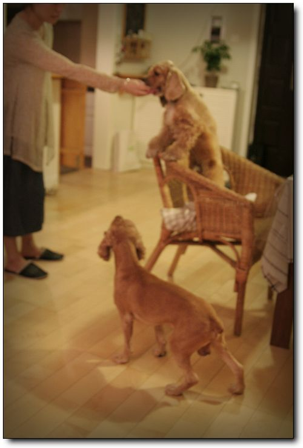
脾气古怪的外外，超严肃。想望美食的表情才这么可爱的~
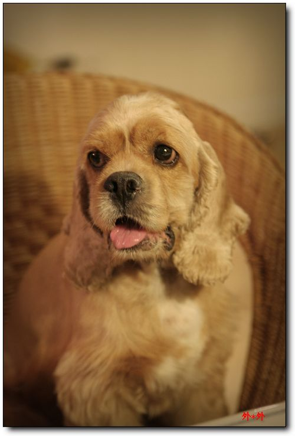
目不转睛地盯着餐桌上的零食。

仍然很热烈地望着桌上的那袋饼干。
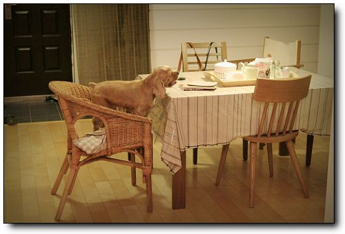
哈，饼干就在不远处，但只能望着望着不停地望着啊。

一对有才男女与一对性格完全相反的可卡生活在童话田园里。

我最喜欢的是ZAKKEY，因为它的眼神很打动我。虽然它被剔成了光猪，还是很帅哦，忍不住要温柔地抚摩抚摩再抚摩（再次这样表达），不幸地是从我怀里挣脱跌落在地上的声音很。。。。它渴望从主人那里再得到一块美味的饼干。

可爱吧，和人亲近的狗狗最可爱。
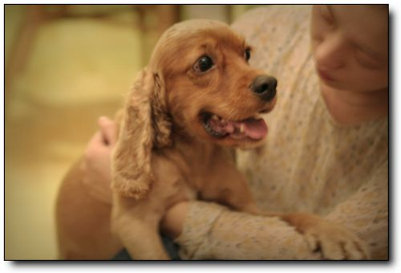
狗狗和主人的感情都凝聚在眼神里了。

*********************很HIGH的夜晚*******************
走路去1912的COSTA喝咖啡。
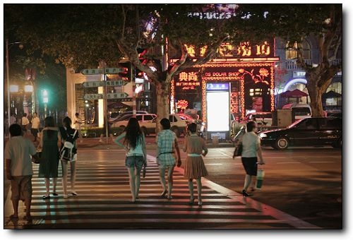
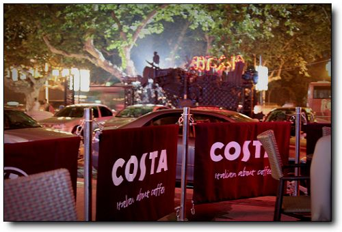
在我的威逼下MAGGIE接过电话继续骚扰问问，出来吧，来吧，不来去你家小区贴标语，蹲小马扎。。。这威胁也太有创意了吧？谁让MAGGIE是个又认真又有意思的女人呢！

她，晚上大多数时候都不在状态哦~但得知可以去见问问，眼睛里才闪出光彩来。
预约 @ Aug 21, 2009
8月18日发了邮件向领馆预约个人签证，今天早晨得到领馆回复，9月中旬可以送签。
脑子里突然一片空白，至少有两周时间准备材料，8天的国庆节是否要用上，加上14天的假，签证效期怎么申请？到底是西欧东欧一起转了，还是只去东欧？接着发邮件询问Helen，是在香港汇合还是瑞士？如果在瑞士汇合，那我要不要提前在瑞士周边消磨几天？看过《人皮客栈》的人对东欧或多或少会心有余悸吧，尤其在她提出邀请的那个晚上我的心里七上八下的，三个女人，会不会被拐卖掉啊？秋天会是欧洲很舒服的季节，想那么多也无用，拿到签证是关键。回头想想悉尼的朋友真不靠谱，上半年多少旅行的机会都因为要去澳洲而放弃，如今急匆匆跑去签欧洲，一堆功课要做，埋怨。。。埋怨。。。
那个。。。那个领馆的工作真好，一早打电话才有人接，下午的电话便是无尽的等待，打到商务处问，说是工作时间很短，最好上午打，不停的打。。。欧洲人民的假期也多，尤其法国人，要休假了天王老子都拦不住，总之，不能总被生活折磨，适当的时候也要放松一下，漫长的等待啊！
耳@环@ @ Aug 20, 2009
Helen传来戴着耳环的照片，前些时候说想穿耳洞，真的穿了，还买了配套的手镯。想起自己02年穿耳洞后戴着耳环的新鲜与快乐感与她现在一样一样。这个居住在“世界上最孤独的城市”的家伙有着与年龄不相符的坦诚与单纯，她说：“来吧，到我这里休假吧，我肯定做好向导....”据说PERTH的街道很归整，不容易走错路，而整个城市沿天鹅河东西走向的4条大路和与之交叉的南北走向的大路而构成，道路中间夹杂着大片绿地。看到一则小故事：20世纪为了给美国宇航员导航，PERTH人全城彻夜亮灯，为空中的宇宙飞船作航标，因此PERTH也曾被称作“灯光之城”。
每天上班浑浑噩噩，沉。。。甸甸的，下班急急忙忙赶回去买菜做饭，日复一日，有时候觉得再也受不了了，真想抛下现在的生活背着包跑出去流浪。Maggie一个人29号去柬埔寨，她说烦不了了，就是要出去转转，反正还有假期，回来还可以再走。柬埔寨之行总有些悲壮感，那个地方安全吗？去年到今年我都没有真正休过假，除了计划性差之外，也没心情。Stephen Arroyo认为：人是肉体、情绪体、心智体与灵性这四个层次的综合体，任何一个层次若被忽视或得不到滋养，就会产生反动；若想活出平衡的生活，就必须留意自己的主要需求是什么。晚上睡觉的时候我在想和她一起旅行，去哪里都可以，因为她不仅有趣又简单而且英文很棒！
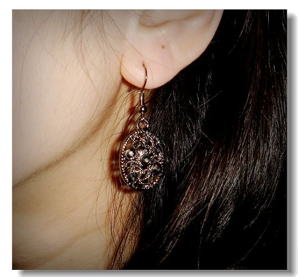
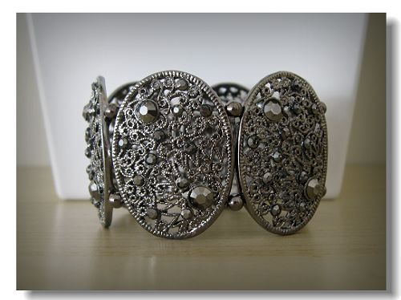
已故设计大师Yves Saint Laurent曾说：“什么是漂亮女人？那就是着黑色筒裙、黑色高领衫，臂弯里挽着心爱男人的女人。”

牛掰的手动档 @ Aug 18, 2009

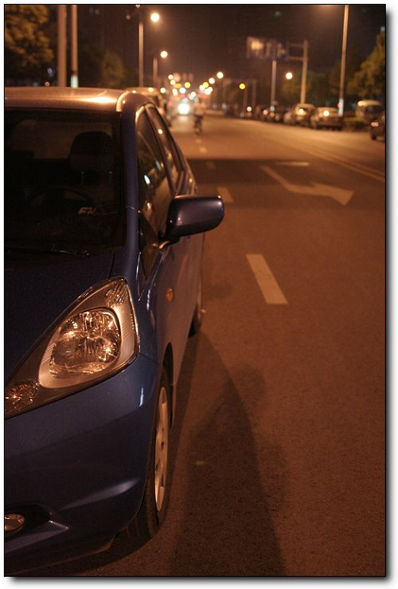
朋友将新买的车丢给我开磨合期，啊哦！我的脑海里立刻闪过《速度与激情》里唰唰唰几秒内换5个档的镜头。。。
从驾校出来一天手动挡都没开过的我，起初很兴奋，渐渐就被巨大的挫折感压垮，压垮！路上熄火无数，因为排量小的缘故，半联动点反应很微弱。不幸地是遭遇许多坡道起步，totally忘记该如何操作。努力想啊想啊，想起老师教的找到半联动再放手刹。。。自己也觉搞笑的是，常常先看仪表盘再看档位，接下来再决定换哪个档。死脑筋？！按照驾校的规定一档一档进，一档一档降，非把自己逼死不成。更别说驾校不允许的空挡滑行喽。当然。。。死过的脑筋很快复活。。。就象你学会骑自行车，50年里你再没骑过它，但50年后你只需要熟悉10分钟就可以让自行车飕飕地跑到街上去。开手动档车也是一样。
想想。。。女叔马赫原来都是虚的，能把手动档开成自动档那么拽才是本事，什么时候能在小街小巷里不熄火？为开这辆车我得常常穿上平底鞋，两个月，还有时间征服它。在市区1.5排量的车作为代步工具完全可以胜任，每百公里油耗才6点几，体型小，容易钻容易停车，空调有力道，就是里面的材料可能不环保，窗户关上一会儿我的喉咙就有压抑感，环境允许基本开着窗户。还有一点，轻易不要把车给你自己之外的人开，自己的车永远只有自己最爱惜，并且车对主人的驾驶习惯是有记忆的，呵呵~
忒损 @ Aug 18, 2009
*1*
朋友甲去洗车，见到临近一辆车（指南者），上前询问车主：“这车多少钱啊？”
车主：“22.98万。”
甲：“哦，这是什么车啊？”
车主：“你听好了，这是牧羊人。”
几天后甲跟我们说：“我那天洗车见着一辆JEEP的牧羊人。。。”晕，被纠正时甲很认真地辩论“就是牧羊人，真的是牧羊人啊。。。”笑得我们四脚朝天。

*2*
无独有偶。
6、7岁小朋友看到地上趴着一只啃骨头的金毛，上前请教狗的主人乙。
“叔叔，这是什么狗啊？”
主人乙拍拍小朋友的头说：“你记好了，这是吉娃娃。”
“哦，知道了。”小朋友蹦蹦跳跳地离开。
汗，估计小朋友以后见着金毛会兴高采烈地喊“吉娃娃”。

2009 LINKIN PARK上海演唱会 @ Aug 17, 2009
吝啬的人只好离舞台这么远啦~
加广角镜头的作用，看上去更远！

2007年的工人体育场就一光板座位，这次是有靠背的座位。

现场花样繁多的道具，自娱的乐趣也是演唱会的重点。


什么是阶级？这就是阶级的体现。
人家在包间里吹着空调喝饮料，坐着沙发看演出。

左上：DJ/Joseph Hahn，身着Metallica体恤。
生日: March 15th 1977.
出生地: Glendale, California
玩团前绘图家。韩国后裔。
右上：Leader Vocal/Chester Bennington，好随意的白色套头体恤+中裤。
生日: March 20th 1976.
出生地: Phoenix, Arizona.
玩团前Barista西雅图咖啡店店员。
左下：架子鼓/Rob Bourdon
生日: January 20th 1979.
出生地: Calabasas, California
玩团前是服务生。
右下：Leader Vocal/Mike Shinoda，总是穿的格子衬衣。
生日: February 11th 1977.
出生地: Agoura, California
兼管节奏、取样、键盘、吉他
玩团前绘图家。日美混血。SHINODA在日本姓"信田"。

这次坐的位置比07年要远，远是远了点，现场气氛一点没损失。

注意。。。注意正中间上面打追光的工作人员，真辛苦。第一次看到悬在舞台半空中打追光的。。。要是那上面打追光的人是我就好了。。。

舞台效果特有金属感。

整个儿演唱会全场观众都是站着看完的，一小时二十来分钟，累哦~
开回南京凌晨2点钟，好在不是北京开演唱会。
透明夹克里本打算配裹胸超短连衣裙，加上透明金属感的面料，会比较性感吧？可是敌不过蚊子。。。瞧瞧人家老外穿的多少啊。。。懊悔中。。。

进入上海 @ Aug 17, 2009
看到这块迷宫一般路标，就知道上海到了。
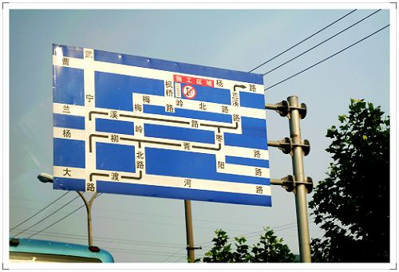
。。。节假日除外，也就是说外地车在周六、周日是可以上高架的，对吧？
可是驾驶员同志还是穿行于三步一岗五步一哨的马路，得以拍到这张照片，应该是某人学习中文的学校吧？！

介个斯诺克大师赛将于9.7.到9.13期间进行，喜欢的铜子们可以看清楚上面的订票电话吗？
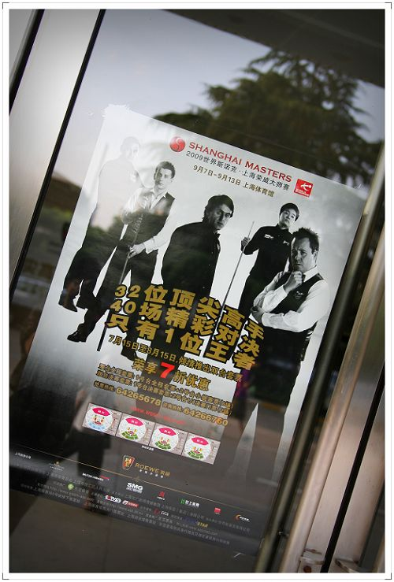
@昆山 @ Aug 16, 2009
快到昆山遇到这堵城墙般的商品楼，真壮观。
很实在的围着高速公路。

收费站里的宾利让大家精神抖擞。

社会主义的标语四处可见。
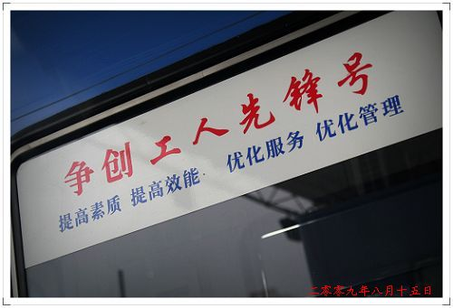
南京高速下来也学了这套“向警察叔叔问路”的免费服务。

十字路口乍一看，找不到交通信号灯，原来在这样的标杆上，特别不明显。

昆山黄河北路的“梦田香草”休闲餐厅，即使是下午两点多钟喝下午茶的客人也不少。既有趣又有点小情调的地方，从主菜到甜品到饮料做得还算精致。

黑色皱纹纸上手写的点单名，用朴素的棉线穿起来的菜单。

梦田香草所有的糕点都是自家制作，左上角那只白色的甜品是蛋糕+冰淇淋，右小角是只巨大的奶油烤芙，口味不错滴说~

芒果冰沙的口味与starbucks的不相上下，不过18元一份。

刚走进去就可以看到许多猫咪装饰，绿意葱葱的小庭院，这里居然还举办过婚礼哦~

天气没那么冷但也热不死人，本打算穿件森林色彩的裹胸连衣裙，考虑到露天体育场可能会有成批的蚊子，最终还是选择了牛仔裤+体恤+金属光泽的透明中袖小夹克+拖鞋，非常推荐一下这件小夹克，百搭款，可以将平庸改装出酷感。在一位茶友开的淘宝店中购买，价格便宜到只有69元，质量还不错哦。如果你正好去看一场比较酷又摇滚的演唱会或者晚上泡吧，如果你的职业允许，那么白天你也可以穿得很拽！还有这件蛇皮纹的小夹克。。。恩。。。也很酷滴。

@芳茂山 @ Aug 16, 2009
行驶到芳茂山服务区，加满油，休息一下。
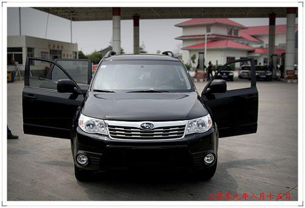
这次开朋友的SUBARU去上海，一路上我都在感受OX和FORESTER 2.5T是不是仅仅是10匹马力的区别？当然这款2.0排量是150匹马力，完全不是一个级别。


上班族的工作日就象这些被关在笼子里的猪，所以每到星期五我就有种即将胜利大逃亡的感觉。
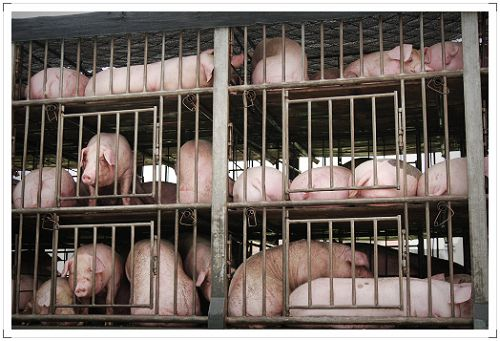
网上定购了5张演唱会的票，其中一人缺席。四人也不错，至少FORESTER坐起来更宽敞。
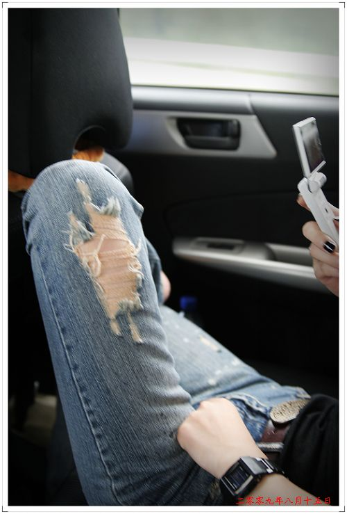
社会主义的春天。。。 @ Aug 14, 2009
上午工会送来一盆粉红色玫瑰花束，及200元现金，去年的生日礼物是玩具熊。很喜欢今年的鲜花，有种鲜活的美好感受，老板年轻些到底是不一样啊！鲜花里插着一张老板签名的卡片，据说那上面的祝福是特别订做的。
中午下班带着它回家，路过别的办公室开心地朝里面的女同事们秀了一下，女孩子们兴奋地大叫：“哎呀，生日过完了啊。”的确，送鲜花是从8月开始哦~
有人感叹社会主义好，说：“我们资本主义才无情，员工得自己在生日当天拿着200元发票去报帐。”这有什么啊？在上海外企的同学月公积金4000，是我的3倍，得到实惠是真的。那个。。。那个在外企工作的邻居时常翘班在家，而这位感叹的女士下午3点多发短信来：“一天都在怠工，没心情干活，提前下班没有高兴感，回家是无奈的选择。”对忙得两眼模糊的人说这些。。。SIGH。。。可是。。。可是。。。可是美国的资本主义社会未婚先孕，同事们会真诚地为坐月子的妈妈轮流送晚饭哦。。。看到这个故事我的眼珠子要掉出来了，为美国人民的宽容！如果在资本主义社会谈情说爱，工作在社会主义制度下，会不会更快乐呢？
在Hi BaiDu的blog上看到这个http://photooftheday。
这个人。
从1979到1997。18年。pola相机。每天一张照片。
第一张是1979年3月31日，最后一张是1997年10月25日。后头的就没了。
因为，1997年10月25日那天，拍照片那人死在病床上。
他的朋友把他生前拍的照片整理了出来，放在网上。
有意思。
送这首汪峰的新歌“春天里”给各位，及每年留言一次的茶友。
如果有一天我老无所依
请把我留在在这春天里
如果有一天我悄然离去
请把我埋在这春天里
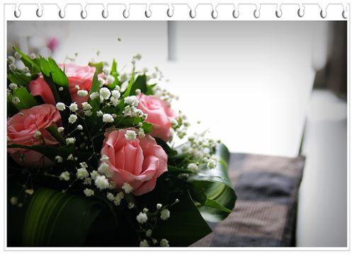
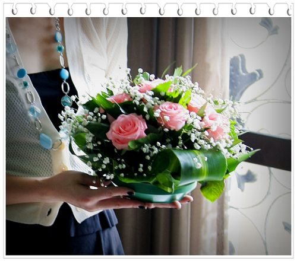
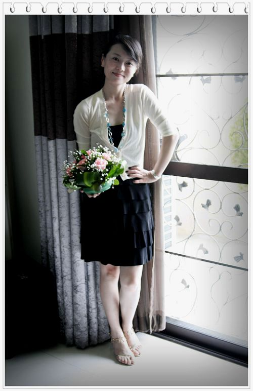
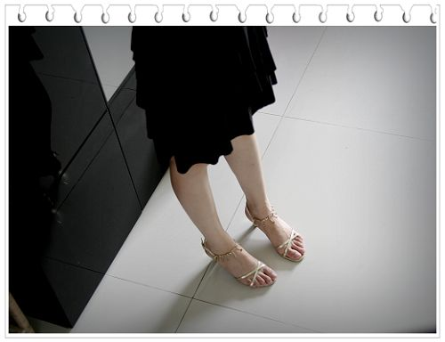
Happy*Birthday* @ Aug 13, 2009
我们又老了一岁，有时候觉得时间过得真快，有时候又觉得很慢。
总之，时间改变了一切，包括记忆。
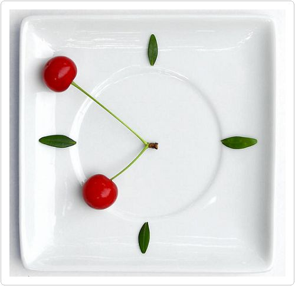
剪V发 @ Aug 12, 2009
原本打算修薄一些，结束后俨然政治工作者的发型，太离谱。 还是不出门的好，一出门悲剧就上演。每次弄头发就象买彩票，反正这次是没中奖，艰难的等待又将开始。以下均由Sherry拍摄，今天Maggie发短信说在德基看到Sherry从眼前飘过，我只想说点点点....因为周日我们才逛过德基。
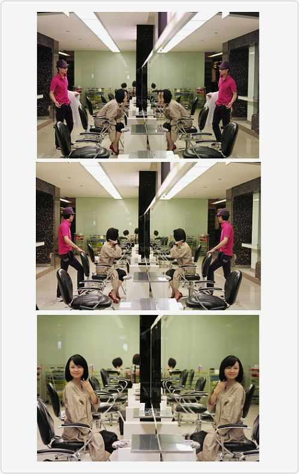
看不清镜子中的自己，如果不戴眼镜的话。

夏季是美发店的淡季，秋冬客人多。其实修完后的发型很自然，但在美发师的劝诱下我还是做了柔化、电发+定型，不得不说他是一位出色的推销员，即使在淡季的时候。不喜欢这么整齐顺溜的发型，好象戴着一顶假发。有人建议用用蓬松粉，不晓得那是什么玩意儿~
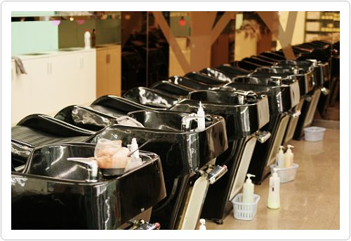
南京能将头发剪得既动感又有活力的发型师并不多，重点是剪，不是做头发。技术不好不要紧，范儿是一定要摆的。

尝试过美发店购买的洗发水和护发素，每天顶着从理发店出来的气味儿并不爽，专业洗发产品去污力超强，洗完后头发很涩，不适合经常使用。

终于用完VIP卡里所有的数字，该是告别的时候了。

更替 @ Aug 12, 2009
透过内裤稀疏了的面料看见邻居家的窗户时，它们的老化令自己惊叹不已。全棉面料下的设计几乎很大众化，没有性感，没有特别丰富的色彩以及神秘的蕾丝，可是它们耐用而舒适。女友会惦记商场里700元的BRA，而我则毫无欲望地守着一堆全棉内衣。于是某天，一件...一件...衰老的内衣被丢进垃圾桶。面对取而代之风格迥异的新内衣，我的内心还是一片平静。

黑＄暗 @ Aug 12, 2009
所有的黑暗只关乎“利益”，从左口袋到右口袋的黑暗。无关能力，无关业绩，无关方式。真实的＂24小时＂政治，每天上演，谁有JACK的运气？当“莫拉克”以10公里/每小时相当于人步行的速度进入江苏，又以20公里/每小时离去后的今天，天空终于放晴。晾晒清洗的衣服，内衣已老化，体恤也褪色。
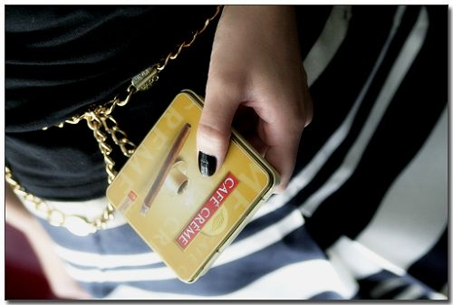


牵手 @ Aug 10, 2009
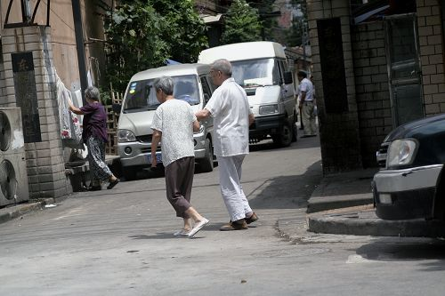
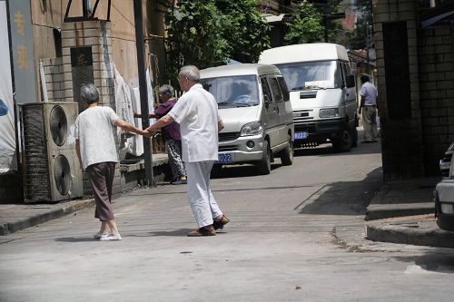
丧失购物欲 @ Aug 09, 2009
当心态发生变化后，对于事物的审美与需求也会随之发生变化。比如早几年比较喜欢的IZZUE，如今奇怪对它怎么没有兴趣了？连Sherry也奇怪：“你好象没有购物欲啊？”在这么没有购物欲的状况下，我还是在曾经喜欢的西班牙品牌ADOLFO DOMINGUEZ那里买到两件满意衣衫及SISLEY衣服若干。

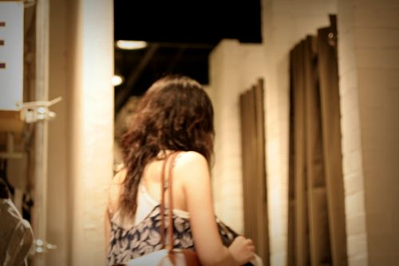

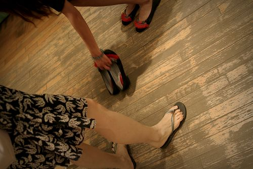


国内French Connection UK的货品永远不是我的STYLE，不过非常适合甜美的Sherry，比如她今天逛街穿的上面那件藏青色吊带裙。

清.空.大.脑 @ Aug 07, 2009
和Sherry随机选在水游城的TACOS解决晚饭，如果阿英煲打死卖糖的，那么这家TACOS则打死卖盐的，每道菜都咸。分店和总店的差距怎么那么大？
德国烤肠数量没减，体积只有总店的1/2；色拉里除了一只球型土豆泥+一片黄瓜+一些生菜叶，没其他内容。那片黄瓜被我抢先吃下，一股鱼腥味儿冲出来；加酥皮的罗宋汤咸得我直发汗，锔饭、色拉、猪手也咸。好在没点巧克力蛋糕，怀疑上来会是份咸的甜点。每张桌子上立着一只高高的TACOS标记的玻璃瓶子，里面加一两片柠檬的免费白水，瓶子看上去脏兮兮的。
埋单时我禁不住又废话了：“你们店的厨师和老板有仇吗？”
服务生：“为什么？”
“每道菜都那么咸！”
。。。。。。9折帐单共计182元。
就着咸菜咸饭倒出的都是无奈。
我以为多休息一天可以很快活，快中午的时候起床，阿姨打扫卫生我做饭。忙完这些还有一袋子的脏衣服要洗。。。经济危机下的美国诞生了许许多多的家庭主夫，那些从基金分析师以及金融系统回归家庭的男人们和我今天一样以为可以很快活，如果你的身边还有一两个孩子的话，一旦陷入家庭职业是无论如何闲不下来。“想做什么就做什么”得在夹缝里见缝插针，看着那些真假开心走进婚姻的男女，那些与第二选择结婚的男女，有人嘴角掠过一丝冷笑。
人在每个阶段要面对不同问题，年轻的时候忙着找好工作，忙着谈无果恋爱，到了婚嫁年龄却找不到好男人，真找到结婚了又要负责柴米油盐酱醋茶，同时还要承担起工作上的压力，适应好了却发现原来的好男人不过是匹种马，从不间断地搞三搞四，女人于是被锻炼出十八班武艺，当一切烟消云散没准儿又遭遇无性婚姻的无奈，这之后翩翩而至的中年危机、更年期。。。没完没了的问题等着我们去解决，没有停止的时候，也少有完美片段。
忘了在谁那里看到一项有关婚姻的调查：俄罗斯专家针对1500对夫妻做了跟踪，其中97%因为爱结婚，2%把结婚当作任务完成，1%因为利益结合。最终只有1%因为利益结婚的夫妻过得最幸福。真的？真的吗？（对不起，用了鲁豫的台词）简直太讽刺了，对那些前赴后继追逐爱情梦想的人是个讽刺，不是吗？
这就准备就着无锡蠡园的紫葡萄和什锦果仁看反恐去了。看到第四季有两个明显的印象：一个是有关Tony和Michelle，Tony因为救爱妻Michelle而放弃事业生涯，结果两人离婚。因为Tony一直没有找到工作酗酒如何如何的原因。想来人们的知恩图报一定是排在满足自己需求之后的，感情上尤其如此。
第二个印象是Jack，一个伟大的英雄人物没有大脑是无法持续作为一个英雄存在的，Jack除了特工技能外，还具有非凡的表演力和语言组织能力，否则如何能够迷惑敌人，如何让谎言屡屡得逞？如果你恰恰找到这么个所谓好男人，要么一辈子被他骗，一辈子蒙在鼓里也不错。要么就离他越远越好。
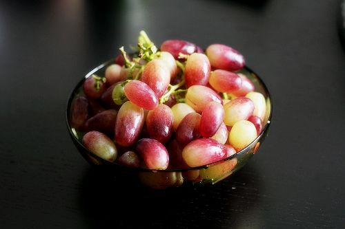
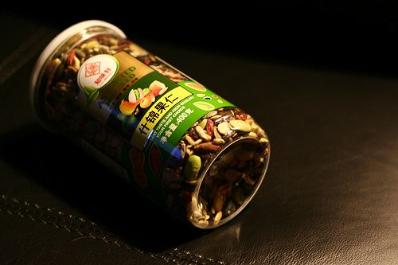
camera c.o.m.p.l.e.x. @ Aug 07, 2009


夏天的荷尔蒙 @ Aug 06, 2009
哇，终于忙完了！想休息一天不容易啊，得在今天把该做完的工作做完，该交代的交代。不过终于可以休息一天啦，心生欢喜。需要清空，除了没完没了的用连续剧轰炸脑袋十几天外，且又预订了LINK PARK上海演唱会的门票，在我生日那天。对啊，他们又来中国赚钱啦，我们又可以在现场发泄一把了，这个夏天太不象夏天，一切都失去了平衡，不是吗？明天这就入秋。。。
夏末MIX @ Aug 05, 2009


经前综合症 @ Aug 05, 2009
事实上今天我的情绪非常糟糕，没有缘由的时候都会被归结到经前综合症。有人说如果将这几天冰冻起来，等一切烟消云散之后再解冻，就不会被不良情绪折磨。而我在想有没有一种药可以让女人平静地度过周期性反应？因为钟点工请假而一次没有打扫的地面已经让我无法忍受，这是否属于精神洁癖范畴？睡前看“反恐”，睡眠质量明显下降，早晨6点多钟就醒了，白天浑身散了架似的。anyway，正视自己的不良情绪总好过无缘由的抱怨发火，顶多折磨折磨亲近的人，发泄一下想死的情绪，当然不会真的想死，只是不良的程度到了可以用想死来比喻。
有人看到我写下的这些，一定会减轻自己的苦楚感，因为让我们自己高兴起来的方法之一就是听/看别人难受又沮丧的状况，没瞧见大街上那么多喜欢凑热闹围观的么？他们比谁都过得简单而开心，虽然非健康常态，但人类总是如此龌龊又真实的嘛。所以你想让别人高兴，你就大声说：“嘿，我活得很糟糕啊，我活得生不如死。。。”偶尔造福众人，也是善事一种。
*******************倒完苦水，来道甜点吧！**********************
终于对这只日本小南瓜开工了，硬度堪比紫薯，不信你经历一下从刮皮到切成丁的过程？！同时也说明“浓缩的就是精华”。我是这样操作的：将泡好的银耳和南瓜丁一起放入水中，加入冰糖，按下电饭煲“煮粥炖汤”键，第二天一早就有现成的补品等着你去享用，盛出来凉了后放入冰箱冷藏，晚上睡觉前吃一小碗。我们没有燕窝，可以用银耳代替啊：）LOOK！取悦自己一点不困难。
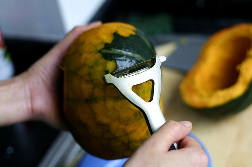

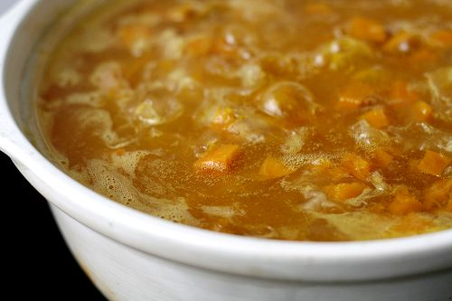
学会享受生命 @ Aug 04, 2009
连续两期《心理月刊》杂志没看，这两天睡觉前随手翻翻，看到一则问答，有个读者总喜欢跟别人攀比，觉得别人的生活比自己好，住的房子比自己大，车档次更高......很多人自己好也不希望别人好，别人的好又引来自己的嫉妒......我个人认为你一旦嫉妒某个人，正说明你不如对方，你的潜意识里承认对方比你强，你羡慕对方的生活。任何一种生活方式都是我们自己的选择，你选择它就要经营好它，要么就去改变现在的生活方式。如果没有能力改变，不如闭上嘴巴学会享受它让你获得的那部分。DR.LI的回答也有些启发：
有时候人搞不清生命是为自己活还是为他人活。如果隔壁阿牛有什么你就必须有，那么你的“有”是为了给谁看呢？自古福兮祸所伏，祸兮福所依，有所得必有所失。我们都有属于自己的一生，尽管我们有着很多的追求，也包括对物质享受的追求，只要尽人事，随天命就好了。真正有福的人能够时时享受自己所获，愿意取悦自己并活在当下。你在生活中也曾得到许多，却没有为所获而欣喜，反倒羡慕或嫉妒或憎恨不属于自己的东西。长此以往，哪怕你的BF/GF最帅/最漂亮，你的房子再大，你还是不能快乐。人生最大的悲哀莫过于此。
因攀比而生的不好情绪的潜在语言是渴望自己被重视。其实，夸奖别人好所隐藏的言语是对方不怎么样。所以真要夸奖人也要真诚地说你可以更好.....这才是一种对人的赞美。如果这样做，那么就把自己放在超然的位置，夸奖完别人后内心会升起一种愉悦，心情也不会被破坏。
**********某天晚上我在家用手电筒尝试了一次光绘拍摄，3秒曝光***********
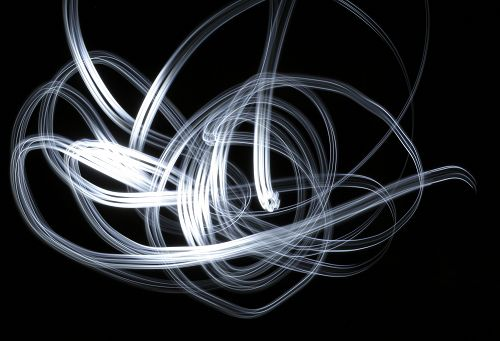


游戏 & 吃货 @ Aug 03, 2009
秋天一样的夏日，和LUKE做游戏，好开心，也希望它好开心。
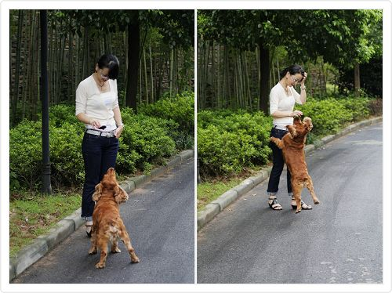
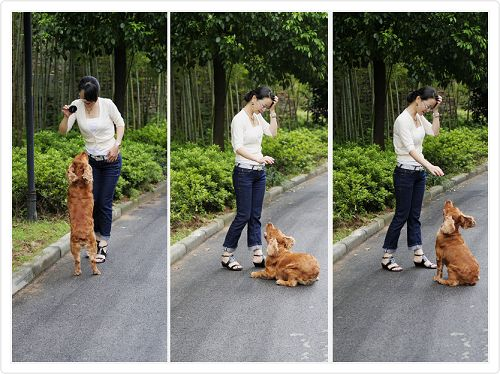
*************************沦为吃货**************************
***一尊皇牛***
所有的火锅店我最钟情于“澳门豆捞”。如果想吃“滑”和海鲜就去豆捞，因为它家的“滑”真的好有弹性，还有可口的配料。如果想吃肉，皇牛的羊肉还是很便宜的，反正我对羊肉没有特别的需求，感觉都一个味道儿。

***朱四公社***
这家店老板还开了狗肉店和羊肉店，前者是万万不会尝试的，后者的口味还不错。这家公社里的各种标语很雷人，估计那些从文革中坚强走出来的中老年人，见着这些标语以及红卫兵打扮的服务生（注意第2张我身后穿军装的服务员），准保心惊肉跳，太甩！就差拿着枪看着顾客进餐了。招牌菜是油焖鸭，只有这一个菜还能接受，其余就算了吧。有些饭店你只会去一次。

“顺”牌拖鞋 @ Aug 02, 2009
麦德龙购买，29.9元。


家有爱宠 @ Aug 01, 2009
下午去人家家里看猫眯，两只做过绝育手术的猫咪现在长成＂球＂状了！前年的《心理月刊》上有篇专门讲猫的心理的文章，那期杂志被人借去一直没还我，至今耿耿于怀。文章大概意思是说猫是不认为人在逗它玩，甚至不屑于被人逗着玩，它就是自娱自乐的主儿，即使在和人类的游戏中，它认为它和你也是平等的。所以不难理解主人对它不好，它就会自谋出路的行为了，从另一个角度看猫还是很有主见的动物。
狗就不同了，狗的生命中只爱主人，将主人视为它的上帝。你对它再不好，它还是爱你。当代“傻根”啊！
他叫＂奥特曼＂，真的叫这个名字哦～擅于和人交流，好吃鬼，据说每到吃饭时间他就坐在这里陪着，一动不动。

她叫“小咪咪”，比奥特曼胖很多很多啊。以前可是细脚伶仃的豆腐西施哦。

上个世纪购买的KEY CHAIN LASER，射程1200米，可换不同灯头，射出来的光会是不同形状，比如星星、恐龙、VICTORY、SOS....居然还有“竖中指”形状 ，呵呵~有CE及FDA认证，顶级配置的玩具。

LUKE盯着那些各种各样的形状追啊追啊，用嘴咬啊咬啊，运用了各种战术，结果还是扑了个空。这么高科技的玩意儿，它怎么能弄明白呢？只好望着它们发呆。。。

好没劲啊，总是追不到那些东西。

厨房．愉悦 @ Aug 01, 2009
星期六，下雨，2点才吃午饭。
***蔬菜色拉+茄汁金枪鱼***
蔬菜放在盐开水烫一下，加上橄榄油和色拉酱。茄汁金枪鱼罐头，打开即吃。麦德龙有卖新鲜金枪鱼，也可买回加少许盐清水煮熟，剁成肉泥或撕成鱼丝配蔬菜色拉吃。不建议买茄汁金枪鱼，口味一般呐。推荐泉水金枪鱼罐头试试。


***红烧辣翅中***
好大的翅中，烧完缩水1/3哦。那个干辣椒放在红烧的菜里，煮一会儿便有明显的辣味，很好用。一袋翅中约30只，25元左右，家人说这道菜可作为我的招牌菜，标价68元。30只饱满味美的翅中，哪个饭店可以买到这个量？我没那么贪心啦，卖50元就好。

***鸡汤炖鸡毛菜***
昨天那只鸡只吃了翅膀和腿，身子都给LUKE吃了。剩下的鸡汤烧了鸡毛菜。

在厨房里忙两小时，烧一顿饭，这就是生活？